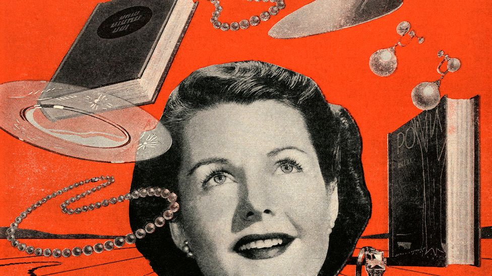

I thought that this related to the conept of NFTs now becoming a form of transmissional medium that still retains ownership.
Part 1:
- Access and transmission of medium, works, and art
- Concepts of copies versus originals
- Manipulation of communication based on how
we interpret visual information
Part 2:
- Realtionship between viewing and objectifcation
of women
- "A women's image of herself is derived from a
man's ideal view of her"
- Gender expectations in art
- Catering to the male gaze in art
I related this section to an artist I studied named Yasumasa Morimura. He is a Japanese artist that creates self-portraits of him recreating iconic works. In this image, he imposes himself on an overly sexualized woman to challenge the overt sexualization of women in media and art.

This section reminded me particularly of the aestics behind the 50's and consumer culture. While today it has taken a different form through social media and influencers, classic magazines and print media were beyond influential in pursuading people of a need for products. I think back to advancements like the dishwasher and how they were able to represent a status through advertisments connecting to our value system.
Part 3 & 4:
- Paintings as a celebrated private possession
to convey wealth
- Consumerist society revolving around art
and advertisements
- Envy culture